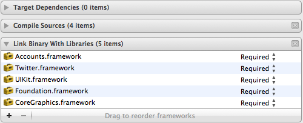

Adding Twitter support is something that makes quite a lot of sense for a number of applications. If you’re in a news reader application you might want to let your followers know about an interesting article you just read. If you’re in a conference schedule app, you not only want to let your followers know about the awesome talks you’re listening to but you also might want to know which other talks other conference attendees are tweeting about to decide whether they are actually even more awesome than that talk you’re stuck in…
Starting with iOS 5, Apple has introduced an official API for accessing Twitter from your iOS applications. Before iOS 5, integrating Twitter in your apps was a rather cumbersome experience which required us developers to jump through many hoops.
In this post I want to outline the most important features of the iOS Twitter and Accounts APIs and explain how to use them to write a decent Twitter client for your next app in very few lines of code. The full source code is available on Github for your convenience.
The Accounts and Twitter frameworks perform much of the heavy lifting required when talking to Twitter, such as
- Providing a secure local storage for user accounts, including their credentials
- Providing an easy way to sign API requests you send to Twitter. You no longer have to include code to handle OAuth or xAuth in your app - this has all been done by Apple for you
- Providing a basic UI for composing tweets, including switching the user account you tweet from, uploading images in a tweet and including your current location
Lots of free stuff, so let’s have a look at how much (or little) code we actually need to write to tap this source of awesomeness.
Using the Accounts Framework to fetch the list of accounts
The Accounts Framework provides access to all Twitter accounts the user has added to their iPhone using the settings app. Currently, the Accounts Framework only supports Twitter accounts, but you’ll soon realize it has been build so that it basically can be used to access any other kind of account in future releases. Maybe the next version of iOS will provide easy access to Google+ and Facebook accounts - we’ll see.
To use the Accounts and Twitter frameworks, we need to add them to the project:

Once that’s done, we can use the Accounts framework to fetch the list of Twitter accounts on the device.
1 2 3 4 5 6 7 8 9 10 11 12 13 14 15 16 17 18 19 20 21 | |
Just like many other new APIs that perform potentially blocking I/O, the Accounts framework uses blocks to execute your code as soon as the data you requested is available. When querying the accounts database, we can specify the kind of accounts we’re interested in - ACAccountTypeIdentifierTwitter in our case. If we’re granted access to the accounts database, we fetch the list of accounts using accountsWithAccountType:. As soon as we’ve got this list, we want to save it in a ivar / property and update the UI. Since there is no guarantee we’re on the UI thread when our completion handler is run, we use dispatch_sync to ensure assigning the list of accounts and updating the UI is run on the UI thread (dispatch_get_main_queue() returns the GCD queue of the UI thread). For more information on blocks and Grand Central Dispatch (GCD) check out this excellent blog post.
Displaying the accounts in a UITableViewController is straightforward:
1 2 3 4 5 6 7 8 9 10 11 12 13 14 15 16 17 18 | |
Displaying the public timeline of the selected user
When the user selects one of the accounts, we want to display a list of recent tweets for this selected account. We’ll use TWRequest to fetch the list of recent tweets.
TWRequest is the centerpiece of the iOS Twitter Framework and relieves us of the burden of having to perform OAuth authentication and request signing on our own. In order for it to do this, we need to provide a reference to the account whose timeline we want to read. We also need to provide the URL of the Twitter API endpoint we want to access. While this might seem a little bit cumbersome at first, this allows us to access not only current API calls but also any new APIs Twitter might come up with in the future without requiring Apple to update the API. Pretty nifty.
1 2 3 4 5 6 7 8 9 10 11 12 13 14 15 16 17 18 19 20 21 22 23 | |
Again, we need to provide a completion handler which will be invoked as soon as the call to Twitter returns. As you can also see, we’re using the same approach as before to make sure we update the UI from the UI thread. It’s also interesting to see Apple provides us with their own JSON parsing framework - no longer do we need to integrate third party libraries to serialize / deserialize JSON data.
Sending Tweets
So far, we can choose a Twitter account from the list of Twitter accounts on our iPhone and display the home timeline of this particular user. But how about sending a tweet?
Sending tweets is really easy: you just have to instantiate a new TWTweetComposeViewController and display it - iOS will take care of the rest:
1 2 3 4 5 6 7 8 9 10 | |
The completion handler is merely needed to dismiss the tweet composition view after the tweet has been sent.
Conclusion
Integrating Twitter in your own apps has never been easier. With just a few lines of code, we implemented a basic version of a Twitter client that you can use to display a user’s home timeline and send tweets. Elaborating this code base is left as an exercise to you - feel free to fork the code on Github and send me pull requests as you add interesting features!
Here’s an impression of the current state of the application: